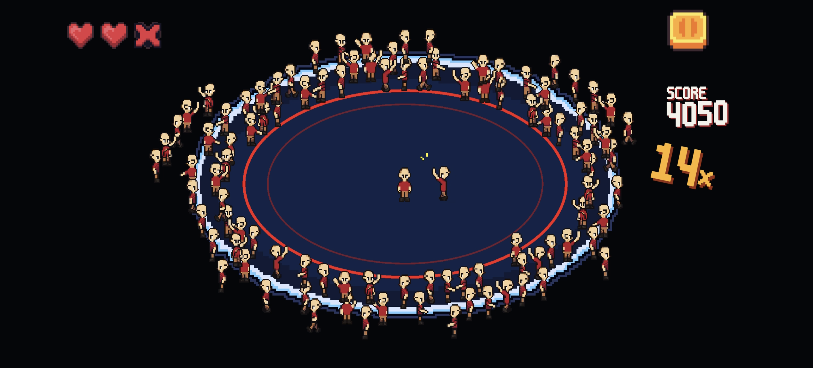
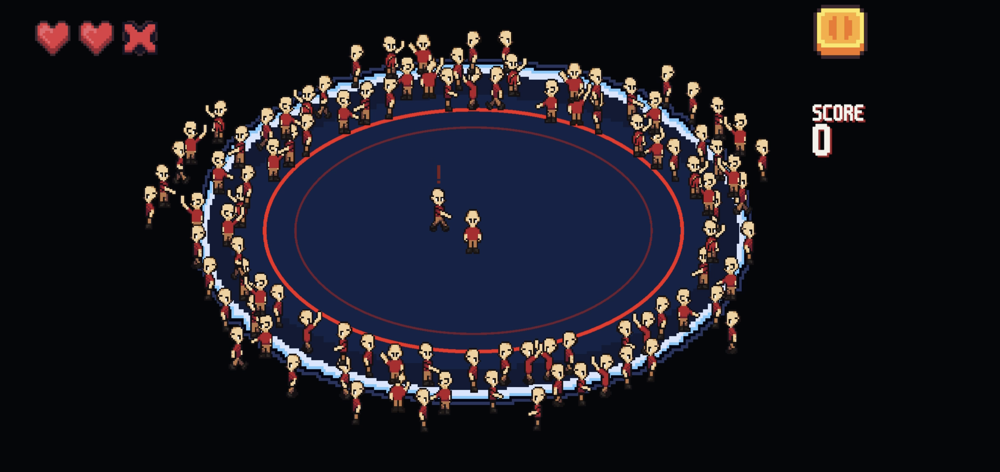

(Not) Very Disco
A two-button reaction game on a packed dance floor. Tap left to high-five a friend, tap right to stop a pickpocket.
- Role
- Character art and animation, visual effects, UI, gameplay polish
- Date
- Event
- Very Disco Game Jam 2026
- Theme
- Compact

My part
I drew and animated every character and made the visual effects. I also designed and built the UI, and worked on how each correct read feels the moment it lands.
Reading the theme
The jam theme was “Compact”, and I took it two ways: a one-touch control scheme and a dance floor crammed with people. Friends want a high five and pickpockets want your things. They look alike until they make their move.
How it gets harder
A correct read adds to your combo and score. Tapping too early, too late or on the wrong side costs a life.
The controls never change. People just arrive faster and the window to react gets shorter, so the rule stays easy to read while the timing gets tough.
Feedback and settings
Each action has its own visual, sound and haptic response, so you know right away what happened. Players can turn on Reduce Motion and set music, sound effects and haptics separately.
What changed after playtesting
Players wanted hits to land harder and the game to feel more competitive. I redrew the animations so they read faster without losing weight, then added hit stop and other impact techniques. Correct taps feel much snappier now.
Screenshots
